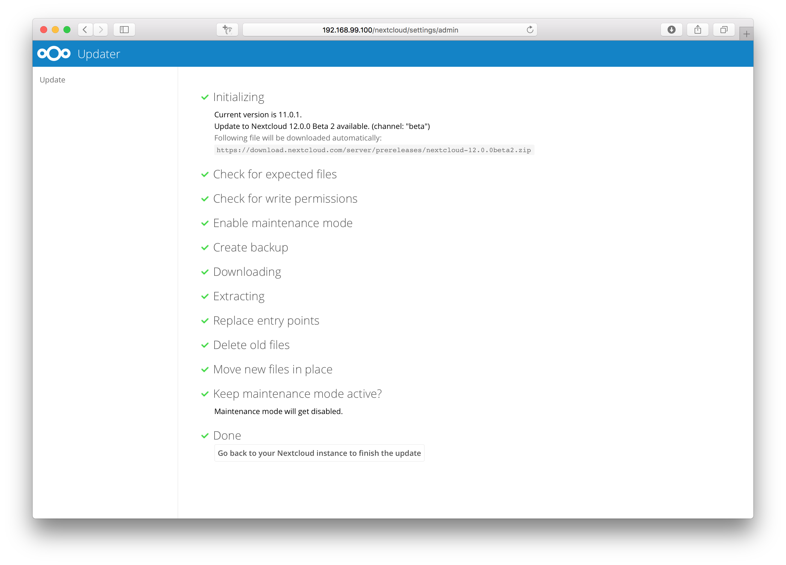
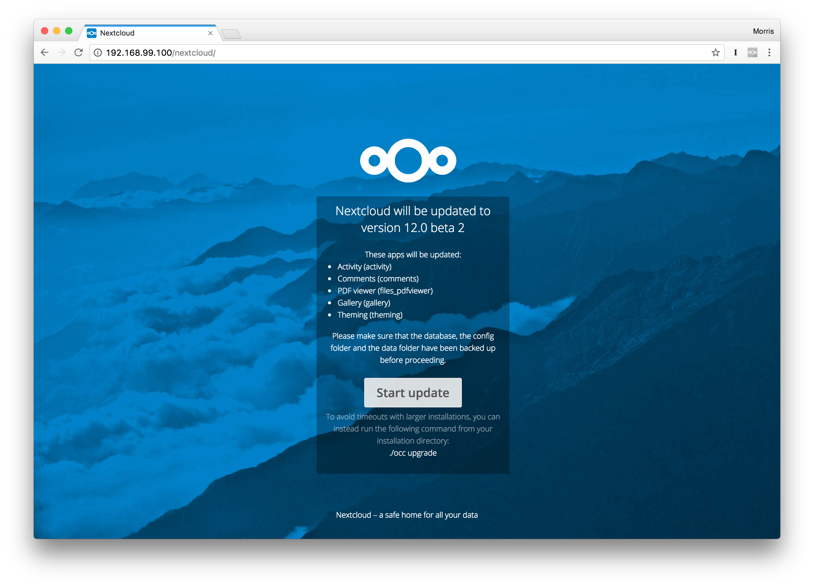

Upgrade via built-in updater
The built-in updater automates many of the steps of upgrading a Nextcloud installation. It is useful for installations that do not have root access, such as shared hosting, for installations with a smaller number of users and data, and it automates updating manual installations.
Warning
Downgrading is not supported and risks corrupting your data! If you want to revert to an older Nextcloud version, install it from scratch and then restore your data from backup. Before doing this, file a support ticket if you have paid support or ask for help in the Nextcloud forums to see if your issue can be resolved without downgrading.
Danger
You should maintain regular backups (see Backup), and make a backup before every update. The built-in updater does not backup your database or data directory.
What does the updater do?
Note
The built-in updater itself only replaces the existing files with the ones from the
version it updates to. The migration phase, which upgrades your database and apps,
needs to be executed afterwards. In command line mode, the updater offers to trigger this
for you right after the code was successfully replaced by running occ upgrade for you.
In web mode, the updater finishes and then offers to send you back to your instance’s main
URL to trigger the migration phase’s web UI.
The built-in updater performs these operations:
Check for expected files: checks if only the expected files of a Nextcloud installation are present, because it turned out that some files that were left in the Nextcloud directory caused side effects that risked the update procedure.
Check for write permissions: checks if all files that need to be writable during the update procedure are actually writable.
Enable maintenance mode: enables the maintenance mode so that no other actions are executed while running the update of the code.
Create backup: creates a backup of the existing code base in
/updater-INSTANCEID/backups/nextcloud-CURRENTVERSION/inside of the data directory (this does not contain the/datadirectory nor the database).Downloading: downloads the code in the version it should update to. This is also shown in the web UI before the update is started. This archive is downloaded to
/updater-INSTANCEID/downloads/.Extracting: extracts the archive to the same folder.
Replace entry points: replaces all Nextcloud entry points with dummy files so that when those files are replaced all clients still get the proper maintenance mode response. Examples for those endpoints are
index.php,remote.phporocs/v1.php.Delete old files: deletes all files except the above mentioned entry points, the data and config dir as well as non-shipped apps and themes. (And the updater itself of course)
Move new files in place: moves the files from the extracted archive in place.
Keep maintenance mode active?: asks you if the maintenance mode should be kept active. This allows the admin to use the web based updater but run the actual migration steps (
occ upgrade) on the command line. If the maintenance mode is kept active command line access is required. To use the web based upgrade page disable the maintenance mode and click the link to get to the upgrade page. (This step is only available in the web based updater.)Done the update of the code is done and you either need to go to the linked page or to the command line to finish the upgrade by executing the migration steps.
Using the web based updater
Using the built-in updater to update your Nextcloud installation is just a few steps:
You should see a notification at the top of any Nextcloud page when there is a new update available. Go to the admin settings page and scroll to the section “Version”. This section has a button to open the updater. This section as well as the update notification is only available if the update notification app is enabled in the apps management.

Click the button “Open updater”.

Verify the information that is shown and click the button “Start update” to start the update.

In case an error happens or the check failed the updater stops processing and gives feedback. You can now try to solve the problem and click the “Retry update” button. This will continue the update and re-run the failed step. It will not re-run the previous succeeded steps.

In case you close the updater, before it finished you can just open the updater page again and proceed at the last succeeded step. Closing the web page will still execute the running step but will not continue with the next one, because this is triggered by the open updater page.

Once all steps are executed the updater will ask you a final question: “Keep maintenance mode active?”. This allows you to use either the web based upgrade page or the command line based upgrade procedure (
occ upgrade). Command line access is required if the maintenance mode is kept active.

Done. You now can continue either to the web based upgrade page or run
occ upgrade. The two examples “Web based upgrade” and “Command line based upgrade” shows how the screens then look like.
Web based upgrade
This is how the web based update would continue:
 Command line based upgrade
This is how the command line based update would continue:

$ sudo -u www-data php ./occ upgrade
Nextcloud or one of the apps require upgrade - only a limited number of commands are available
You may use your browser or the occ upgrade command to do the upgrade
Set log level to debug
Updating database schema
Updated database
Updating <files_pdfviewer> ...
Updated <files_pdfviewer> to 1.1.1
Updating <gallery> ...
Updated <gallery> to 17.0.0
Updating <activity> ...
Updated <activity> to 2.5.2
Updating <comments> ...
Updated <comments> to 1.2.0
Updating <theming> ...
Updated <theming> to 1.3.0
Starting code integrity check...
Finished code integrity check
Update successful
Maintenance mode is kept active
Reset log level
Using the command line based updater
The command line based updater works in the exact same way the web based updater works. The steps and checks are the very same.
The steps are basically the same as for the web based updater:
You should see a notification at the top of any Nextcloud page when there is a new update available. Go to the admin settings page and scroll to the section “Version”. This section has a button to open the updater. This section as well as the update notification is only available if the update notification app is enabled in the apps management.
Instead of clicking that button you can now invoke the command line based updater by going into the updater/ directory in the Nextcloud directory and executing the updater.phar as the web server user. (i.e.
sudo -u www-data php /var/www/nextcloud/updater/updater.phar)
Verify the information that is shown and enter “Y” to start the update.


In case an error happens or the check failed the updater stops processing and gives feedback. You can now try to solve the problem and re-run the updater command. This will continue the update and re-run the failed step. It will not re-run the previous succeeded steps.
Once all steps are executed the updater will ask you a final question: “Should the “occ upgrade” command be executed?”. This allows you to directly execute the command line based upgrade procedure (
occ upgrade). If you select “No” then it will finish with Please now execute “./occ upgrade” to finish the upgrade..
Once the
occ upgradeis done you get asked if the maintenance mode should be kept active.
Batch mode for command line based updater
It is possible to run the command line based updater in a non-interactive mode.
The updater then doesn’t ask any interactive questions. It is assumed that if
an update is available it should be installed and the occ upgrade command
is executed as well. After finishing the maintenance mode will be turned off
except an error occurred during the occ upgrade or the replacement of the
code.
To execute this, run the command with the --no-interaction option. (i.e.
sudo -u www-data php /var/www/nextcloud/updater/updater.phar --no-interaction)

Troubleshooting
The built-in updater logs all of its actions to a dedicated log file called
updater.loglocated in your configureddatadirectory(e.g./var/www/html/data/updater.log). This file can be helpful in isolating where things are failing. It will also be needed if you reach out for assistance on the community help forum (https://help.nextcloud.com).If you are having problems using the Updater in web-mode, you should try using command-line mode (if it’s an option in your environment). Command-line avoids issues with web server timeouts, which can be problematic since sometimes the Updater can take a long time to complete certain steps.
If the problem seems to be during the backup step, you can try disabling the backups the updater automatically creates of the installation files. Keep in mind these backups do not include your data (which you are already hopefully doing). The backup step can only be disabled while in command-line mode. Append the option
--no-backupto theupdater.pharcommand.If you accidentally say no when the command-line mode of the updater asks if you’d like to run
occ upgrade, you can safely executeocc upgrademanually or simply visit the URL of your instance to complete the database migrations and app upgrade phase.Reach out to the community help forum for assistance (https://help.nextcloud.com)